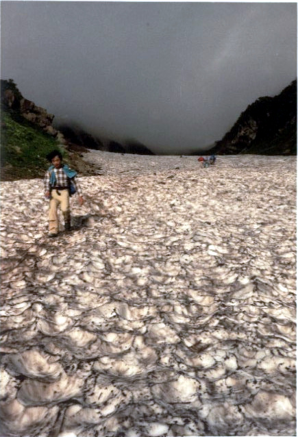
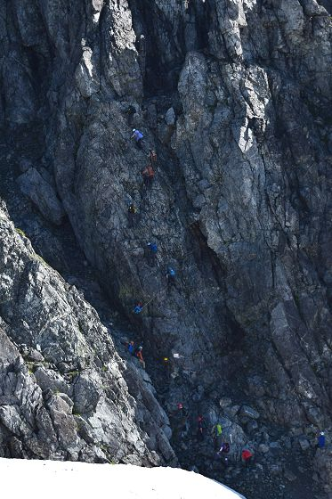
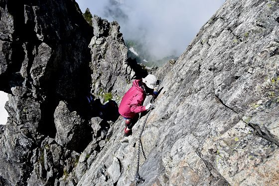

The road Orz passed by 2026 年 07 月
07 月 05 日 ( 日 )
19歳の夏、下山の夏
ぼく自身が撮ったわけじゃないけど、ぼくの手元に残っている写真で一番古いものは、19 歳の夏に白馬山荘でのアルバイトを終えて、大雪渓を下山しているところを、バイト仲間が撮ってくれたものになる。

あの頃は宿泊登山客のピークはお盆に集中していて、当時の白馬山荘は最大収容可能人数は 1500 人と公称していた。小屋の規模は全く変わらないけれど現在は 900 人として、しかもコロナ以降は予約制。
ピーク時は登山客が 1800 人を超えることもあって、そんなピークの時は部屋に入り切らず、廊下だとか玄関だとかにも人が寝ていた。山小屋は人を泊めないわけにはいかない施設なのでそうなってしまうのだった。
連絡手段も衛星電話かトランシーバーのみ。
登山者はトランシーバーなんて持たないし、衛星電話なんてむちゃくちゃお金がかかるので使わないので、山にいる間は、ずっと家族にも連絡を入れないのが普通だった。
だからみんなちゃんと登山届を出したり、家に登山計画書を残して山に入ってきてたんだと思う。
もちろん昔から、そういうことをやらない人もたくさんいたけれど。
写真はお盆を過ぎてピークが終わってバイト期間を終えて大雪渓経由でバイト仲間と二人で下山しているときに、そのバイト仲間が撮ってくれたもの。
彼は東大の院生とか言っていた。人当たりも良くて誠実でいい人だった。
この年はピークが過ぎてあっというまに宿泊客が減って、アルバイトもぼちぼち下山を始める時期だった。
それまで 24 時間拘束、休みも一切なし、ってことが忙しすぎて続いてきてた。プライベートはトイレと週に 2 度の入浴時間と寝てるときだけ、なんて状態だった。
でもピークのお盆をすぎると潮が引いていくように、宿泊客の数も減っていき、週に 1 度は休みが与えられるようになり、激烈なシフトも徐々に人間らしいものへと近づいていく。
そうなっていくタイミングで、ぼくは下で用事もあったので、お盆過ぎに下山したのだけれど、もう少しやっていけば？遊ぶ余裕できるし、とは言われた。
正直もう少し期間を伸ばして、休みの日に後立山連峰の山々を歩き回ることをぼくもしたかったけれど、下山しなければならなかったので仕方なかった。
そんなこともあって、ぼくが後立山の山々でピークを踏んだのは白馬岳、旭岳、小蓮華山だけになる。白馬岳の山頂は山荘から歩いて普通の登山者で 20 分、ぼくらは空身なので 10 分くらいでたどり着く。
そんなこともあって山荘アルバイトにとってはいつでも行ける山頂なので、たいてい天気のいい日にしか行かないし、登山ではなくて日々の散歩になってた。なにせ片道 10 分だし。
旭岳も小蓮華山もあくまでバイトの休憩時間を使ってダッシュで往復していたので、トレランなんてアクティビティがなかったあの頃、白馬山荘あたりで空身で走ってた連中はぼくらのような山荘アルバイトたちだった。
一般の登山者は、なに？こいつら？って目で見てたけど。
白馬岳山頂付近で草履で歩いているやつがいたら、たいてい山荘アルバイトだ。一般登山者は奴らの真似をしてはいけない。
一般の登山者は栂池ルート、大雪渓ルート、鑓温泉ルートから延々と歩いてきて疲れている。中には蓮華温泉ルートの長大なルート歩いて山荘にたどり着く登山者もいる。どのルートも楽なルートではない。
山頂付近を山荘のバイトのように草履でうろうろしていたら、たいてい怪我をしてヘリで松本市内の病院に搬送されることになる。もちろん遭難者としてカウントされるし、松本警察で遭難者として事情聴取を受けることになる。
自分は疲れているということを忘れてはいけない。
話は変わるが、threads で以下の投稿を見かけた。
嘘みたいな本当の話ですが17年前に剱岳の別山尾根を下っていたら登ってきた人に「頂上の山小屋でビールは売ってますか。」と聞かれたことがある。
最初は爆笑したのだけれど、いやちょっと待て。このビールは売っているかおじさん、劔岳がどういう山なのか何も調べずに突っ込んできてないか？高尾山や六甲山に登るようなつもりで突っ込んできてないか？と怖くなってしまった。
別山尾根は劔岳に登るためのもっとも登山者が多い一般ルートだ。一般ルートとは言っても、上りはカニのタテバイ、下りもカニのヨコバイと呼ばれる難場を抱える日本アルプス屈指の難易度を誇る一般ルートでもある。毎年一般ルートで人が何人か落ちて死んでる山でもある。
前剱の直前に下の引用ツイートのような場所もある。
#登山の日 なので、
— 桐谷蝶々 (@choucho0115) October 3, 2024
剱岳で一番怖く感じた
序盤にある細い橋を渡ってる動画です🎥
強風がぴゅーって来たら落ちるんじゃないかってソワソワしながら渡った😱 pic.twitter.com/mpynBVqBQI
何も知らない人はこの動画を見て笑うかもしれない。でもこのわずか 40cm 幅の橋がかかっている両側はすっぱりと切れ落ちていて、そこから落ちれば数百メートルは止まらない断崖絶壁だ。
落ちれば助からないのがはっきりわかるので、ビビるのは当然なのだ。
そういう山で山頂にあるはずもない山小屋があると思いこんでいるということは、地図すら見ず、ガイドブックすら見ずに日本最高難度の山に、自分の実力やその他の一切のことを何も考えずに突っ込んできていることを意味する。

一番上の１人が落ちたらボーリングのピン状態で全員落ちる。運が良ければ死なないかもしれないが、たいてい死ぬ。アルパインをやる人たちが劔は一般ルートのほうが怖いと言ってバリエーションを選ぶ所以でもある。
仮に山頂でビールを飲むとする。その場合山頂でビールを飲んで、いい気分のまま、落ちることなく、カニのヨコバイなどの難所を越えて無事に下山できるのかどうか？もちろんカニのヨコバイだけでなく気の抜けない岩場が連続する。

怖いよね。
結局、山でも人が一番怖い。
- Category :
- #Records of Orz's Road
- #登山
- #思い出
- #白馬岳
- #白馬山荘